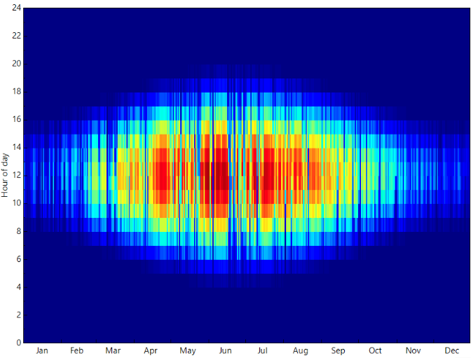

← Back to products

Weather files
Global EPW Scenario Generator
Picture: EPW file heatmap (hourly dry-bulb by hour of day and month).
A global weather-file generator that replaces static, historical airport data with site-specific EnergyPlus Weather (EPW) files tailored to exact coordinates and future (extreme) climate scenarios.
Strengths & innovation
- Extreme eventsSimulates specific extreme events such as heatwaves — not just simple "mean-shift" morphing.
- Global flexibilityGenerates data for any coordinate on Earth, independent of proximity to a physical weather station.
- Scenario flexibilityEPW files for every future (SSP) scenario and time window, compliant with the study scenario.
- Best data availableCombines ERA5-Land reanalysis, local WMO weather stations and CMIP6 projections from multiple GCMs.
Quote
“Designing for a historical TMY means designing for a climate that no longer exists — future and urban weather files move the design point to the conditions the building will actually meet.”
Demo
Real monthly climate profile for each demo city — the shaded band is the P10–P90 spread, the line the median. Historical (1991–2020) vs a future CMIP6 file for the same coordinate.
Loading demo data…
Free request
Free request — one scenario only (SSP2-4.5, served from an external hard drive). Request an EPW file →